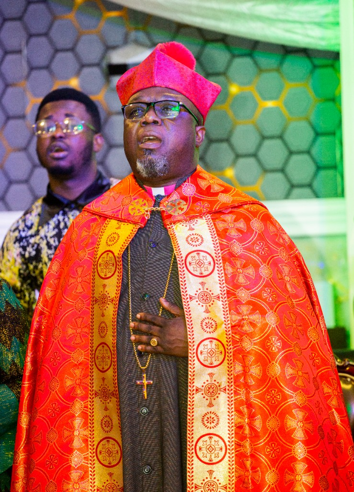
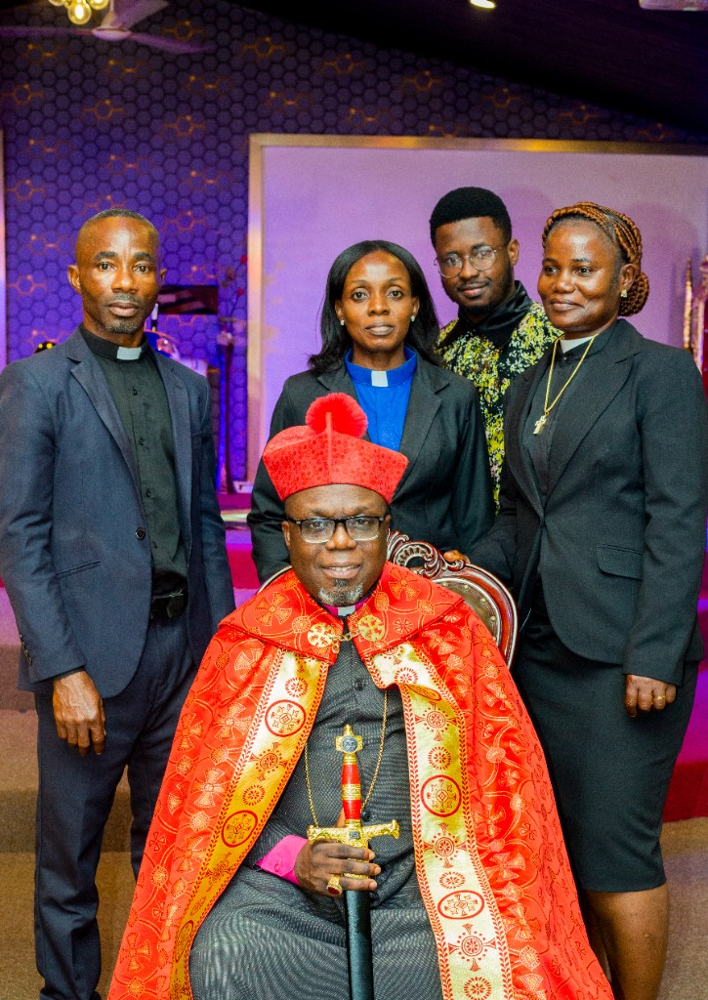
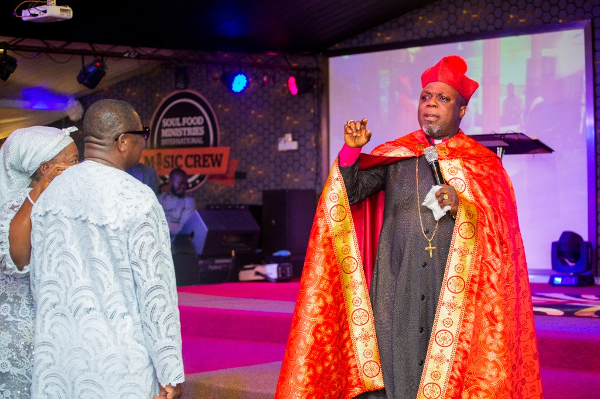

Sunday
Revelation Service, 8:00 a.m. to 12:30 p.m.
Soul Food Ministries International
Changing the World by the Word.
General Overseer of the church in Lapaz, Accra.
This Sunday
Revelation Service, 8:00 a.m. to 12:30 p.m.
Lapaz Race Course, Container, Lapaz.

Revelation Service, 8:00 a.m. to 12:30 p.m.
Evening Service, 5:30 p.m. to 8:00 p.m.
One-to-one, Monday, Thursday, and Saturday, 9:00 a.m. to 12:30 p.m.
Ask the ministry to confirm the current week before you travel.
Worship
Sunday’s Revelation Service, evening worship from Monday to Saturday, and one-to-one counsel. The music crew is part of the service.
A calling
Trains and equips people who have a call to serve, ordains them, and gives a licence to minister. Three schools: Impartation, Prophets, and Ordination.
A skill
Free computer training, paid for by the church and open to anyone. By December 2022, more than 17,000 people had been trained.

The house
Container, Lapaz, Accra. The ministry is also listed at Nii Okaiman West, Santa Maria.
“As we seek the kingdom of God, it is also important that we empower people physically whilst we talk about the spiritual things.” Bishop Dr. Eddie Lesta, Ghana News Agency, December 2022

Bishop Dr. Eddie Lesta is a computer specialist who carried that work into the church. The Ghanaian Times has described him as the founder and General Overseer. In 2014 the ministry launched an internet station, soulfoodtv.tv, under the motto it still uses.



Lapaz Race Course, Container, Lapaz, Accra. Also listed at Nii Okaiman West, Santa Maria.